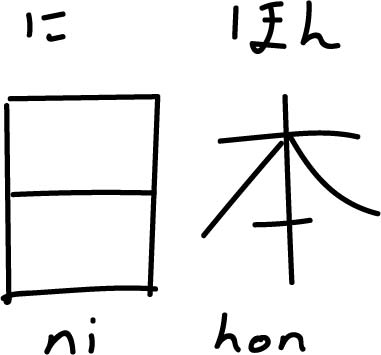
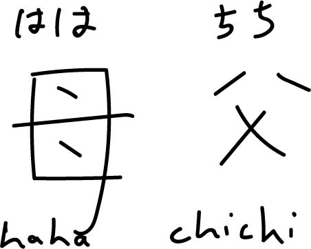

kanji
Kanji are complex symbols, adapted from Chinese characters, which define the meaning of a word, since many words in Japanese have the same pronunciation but completely different meanings.
About Kanji
Each Kanji has a particular stroke order to be followed. Stroke order gives flow to the characters when you write them out by hand. Also, if you remember the stroke order of basic Kanji, then more difficult kanji become much more easier to write.
There are so many kanji that even Japanese people can't remember every character.
List of Kanji
Below are a list of some of the most common Kanji:
-
Person
Meaning: human being, person, personality
Readings: にん / ひと / じん
English: nin / hito / jin
Examples: オーストラリア人 (Oosutoraria jin, Australian), 人せい (jin sei, life) -
I/Me
Meaning: Me / I
Readings: わたし
English: watashi
Examples: 私のなまえはケプラーです。（watashi no namae wa Kepura desu, My name is Kepler), 私たち（watashitachi, us) -
Japan
Meaning: Japan (Literally: the sun's origin)
Readings: にほん / にっぽん
English: nihon / nippon
Examples: 私は日本人です。 （watashi wa nihonjin desu, I am Japanese) -
Mother/Father
Meaning: mother / father
Readings: はは, かあ / ちち, とう
English: haha / chichi
Examples: 私の母はやさしいです。 （watashi no haha wa yasashii desu, my mother is kind) -
Numbers
Meaning: one, two, three, four, five, six, seven, eight, nine, ten
Readings: いち, に, さん, し / よん, ご, ろく, なな / しち, はち, きゅう, じゅう
English: ichi, ni, san, shi / yon, go, roku, nana / shichi, hachi, kyuu, jyuu
Examples: 私は十九さいです。(watashi wa jyuukyuu sai desu, I am 18 years old)